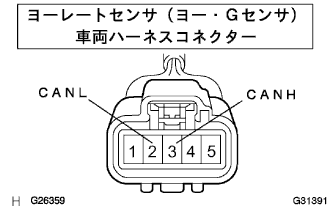
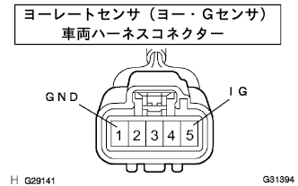

CAN Communication system (with VSC) Jaw G sensor communication mode |
| Diagnostic item | Symptoms | Suspicated part |
|---|---|---|
| Yo G sensor communication mode | "York Related G sensor" is not displayed on the "CAN bus connection ECU confirmation" screen of Tascan |
|
| Step 1 | CAN bus disconnection inspection (yaw / G sensor branch line) |
|  |
IG OFF and separate the vehicle harness connector of the yaw -rated sensor (yaw / G sensor) from the yaw -rated sensor (yaw / G sensor).
Use the SST (Toyota Electrical Tester) to measure the resistance of 3 (CANH) ← → 2 (CANL) of the yaw rate (yaw / G sensor) vehicle harness connector.
|
| ||||
| OK | |
| Step 2 | Wire harness inspection (IG, GND) |
|  |
Use SST (Toyota Electrical Tester) to inspect each terminal ← → body earth of each terminal of the yolly sensor (yaw G sensor) vehicle harness connector.
| Inspection terminal | Measurement conditions | standard |
|---|---|---|
| 5 (IG) ← → Body Earth | IG ON | 10-14V |
| 1 (GND) ← → Body Earth | Always | Less than 1Ω |
|
| ||||
| OK | ||
| ||